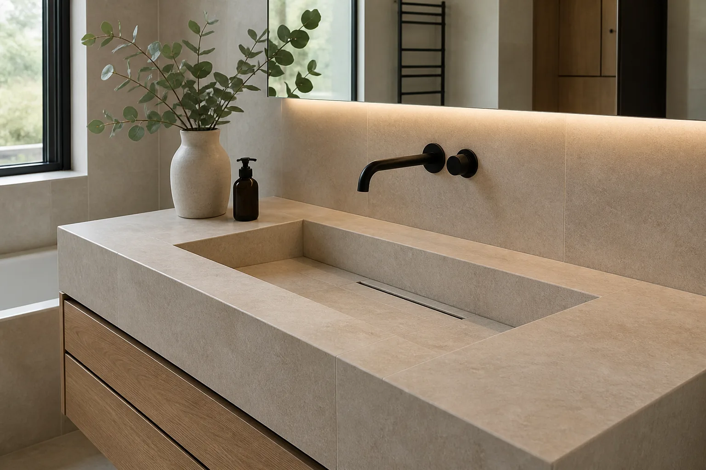
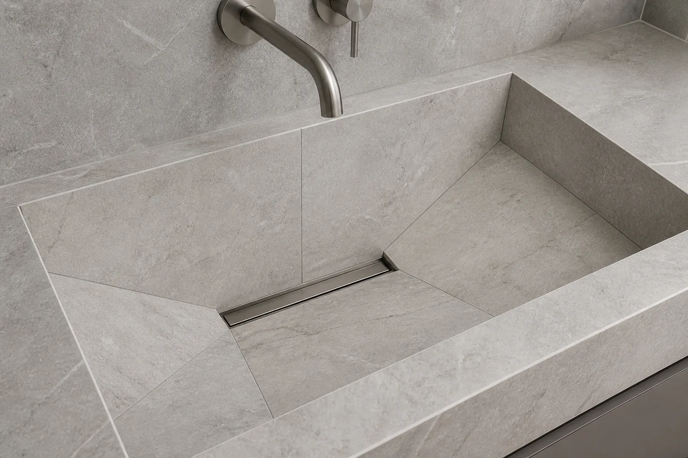

📐
Projektavimas ir matavimai
Parenkamas kriauklės dydis, gylis, aukštis ir forma, suderinama su patalpos geometrija bei plytelių moduliu.
Plytelėmis formuojama kriauklė gali vientisai pratęsti vonios apdailą. Suderiname konstrukciją, nuolydžius, hidroizoliaciją, vandens išleidimą ir preciziškas briaunas.

Parenkamas kriauklės dydis, gylis, aukštis ir forma, suderinama su patalpos geometrija bei plytelių moduliu.
Suformuojama stabili konstrukcija, nuolydžiai ir su visa vonios sistema suderinta hidroizoliacija.
Plytelės pjaunamos pagal projektą, išorinės briaunos suleidžiamos 45° kampu ir kruopščiai užbaigiamos.
Suplanuojamas išleidimas, prieiga prie sifono ir patikrinamas vandens nubėgimas prieš galutinį užbaigimą.

Trukmė priklauso nuo konstrukcijos paruošimo, plytelių formato, briaunų skaičiaus ir sprendinio sudėtingumo. Konkretus terminas suderinamas įvertinus vietą ir pasirinktą dizainą.
Kainą lemia kriauklės dydis bei forma, pagrindo būklė, plytelių formatas, pjūvių ir 45° briaunų kiekis, hidroizoliacija, išleidimo tipas ir montavimo vietos sudėtingumas.
Atsiųskite vietos nuotraukas, matmenis ir pasirinktų plytelių pavyzdį — tai padės greičiau įvertinti sprendimą.